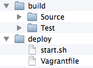

Before a virtual machine image is ready to run your application, you may need to install additional software on it. For example, you may need to install a database engine, a web server, node.js and npm, or any other tools. This is, in the terminology of vagrant called provisioning. There are several tools available to help you with this, and vagrant provides its own simple way of doing this too (which you will try out in this module).

Deployment, which may be seen as a part of the provisioning is the process of taking your application, spreading it to your configuration of servers, and starting it. With Vagrant, you have two options to start with directly, if you do not go for any of the provisioning tools available. You can either use Vagrant’s built-in provisioning facility to also download your application to your server and start it, or you can use the fact that the directory /vagrant is rsynced with your start directory. The latter means that your Vagrantfile is part of your actual build environment, which means that you only need one place to keep your files.

Several tools exist for this process, in addition to the simplistic support provided by Vagrant itself. Below is a brief list of some of the more common tools. These are often referred to as Configuration Management Tools, Orchestration Tools, or Provisioning Tools.